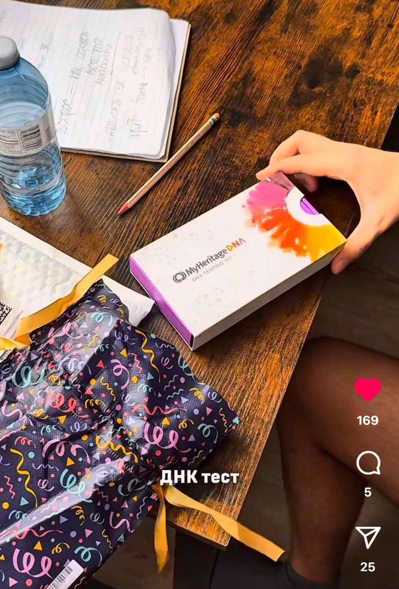

Источники и материалы
Quellen
Поисковые базы, архивы и обучающие видео, которые пригодятся в собственном родовом поиске.
-
Сколько живых потомков моего x3 прадеда живёт в сегодняшнем дне? Какова вероятность того, что кто-то из них сдал тест ДНК?
Считаем по поколениям, сколько живущих сегодня родственников есть у общего предка 5–6 поколений назад, и какова вероятность, что кто-то из них уже сдал тест ДНК, с поправкой на регион.

-
Как найти предков и родственников с помощью генетического теста и старых архивов?
Алексей Пивоваров разбирается, как ДНК-тесты и старые архивы помогают находить родственников, и сам впервые встречается с сестрой, о которой раньше не знал.